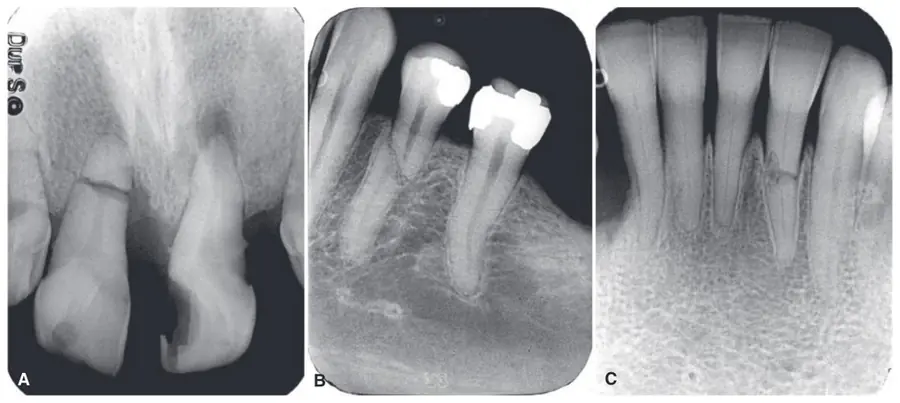
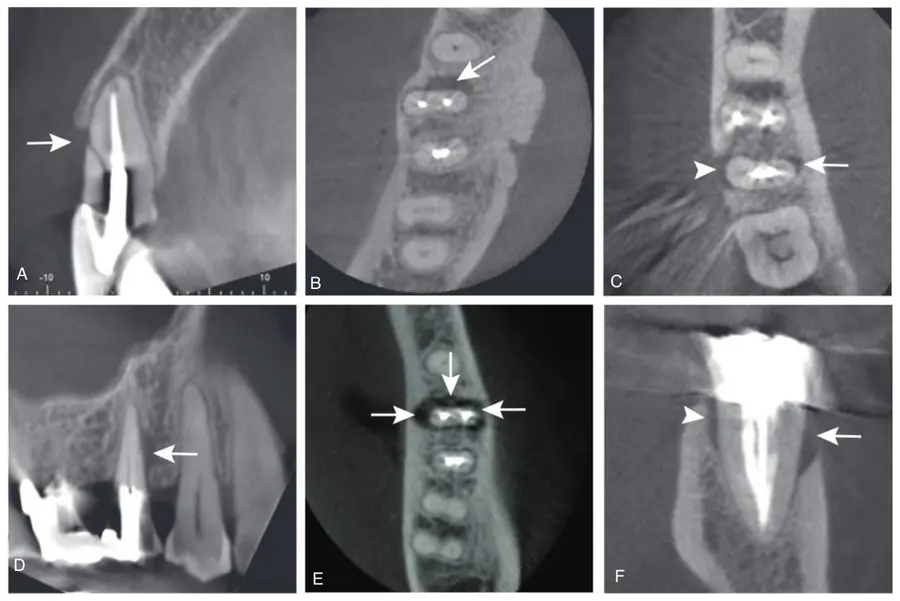

نسخه استخراجشده؛ ترجمه یا تأیید علمی انجام نشده است. وضعیت: captured
شکستگی تاج حدود ۲۵٪ آسیبهای تروماتیک دندانهای دائمی و ۴۰٪ آسیبهای دندانهای شیری را میسازد. شایعترین علت در دندانهای دائمی سقوط است، سپس تصادف با وسایل نقلیه و برخورد اجسام خارجی.

و سه دستهی شکستگی محدود به تاج — این تقسیمبندی، تصمیم درمانی را میسازد:
و یک نکتهی روششناختی مهم: «اینفراکشنها و ترکهای مینا با نور غیرمستقیم یا ترانسایلومیناسیون بهتر کشف میشوند» — یعنی نه با تصویر. شکستگیهای تاج بیشتر دندانهای قدامی و بهویژه انسیزورهای ماگزیلا را درگیر میکنند.
و شکستگی تاج-ریشه: در دندان قدامی، صفحهی شکستگی معمولاً از سطح لبیال به سمت پالاتال و آپیکال پیش میرود. و اصل کلیدی پیشآگهی: «شکستگیهایی که عمیقتر به ریشه امتداد مییابند» چالش بیشتری برای مدیریت میسازند، و قطعات شکسته هنگام بار گذاشتن روی دندان — مثلاً هنگام گاز گرفتن — حرکت میکنند.
و شکستگی افقی ریشه — با یک مشکل تصویری بنیادی: «شکستگیهایی که صفحهشان [با پرتو همراستا نیست] اغلب روی تصاویر پریاپیکال غیرقابل کشفاند و چالش تشخیصی میسازند.»
و پیگیری — که بخشی از درمان است، نه اضافه: در شکستگی تاج، حیات پالپ «در ویزیت اولیه و پس از حدود ۶ تا ۸ هفته و ۱ سال» ارزیابی میشود، و پیشآگهی خوب است: در شکستگی محدود به مینا «نکروز پالپ در کمتر از ۲٪ چنین مواردی پدید میآید» و با درگیری عاج حدود ۳٪. ولی در شکستگی افقی ریشه، حدود ۲۵٪ دندانها دچار نکروز پالپ میشوند و به درمان ریشه نیاز پیدا میکنند؛ و چون پاسخ منفی کاذب تست حیات تا ۳ ماه ممکن است بماند، حیات پالپ را در ویزیتهای پیگیری دوباره بسنج.
و یک قاعدهی محلی برای پیشآگهی: شکستگیهای ریشه که بالای کرست آلوئولار قرار میگیرند، پیشآگهی ضعیفی دارند.
شکستگی عمودی ریشه از هر آسیب تروماتیک دیگری متفاوت است، و این تفاوت بنیادی است: «برخلاف سایر آسیبهای تروماتیک دندانی، شکستگیهای عمودی ریشه بهآرامی پدید میآیند و پیامدهایشان در ماهها تا سالهای بعد تظاهر میکند.»

و اعدادش، پروفایل بیمار را میسازد: ۸۶ تا ۹۷٪ دندانهای دارای شکستگی عمودی ریشه درمان ریشه شدهاند، و شکستگی معمولاً ۲ تا ۵ سال پس از درمان اندو رخ میدهد. شایعتر در پرمولرها، مولرهای مندیبل و مولرهای ماگزیلا.
و یک نکتهی زیستی مهم: «این شکستگیها از ترکهای تاجی گسترش نمییابند، بلکه از نو در درون ریشه پدید میآیند.» و عوامل خطر: ترمیمهای بزرگ، پستهای داخل کانال، ریشههای دارای دو کانال متصل با ایسموس، و برداشت بیش از حد عاج حین آمادهسازی کانال.
و مهمترین پیام تفسیری این درس: تشخیص شکستگی عمودی ریشه اغلب نه از دیدن خود صفحهی شکستگی، بلکه از الگوی از دست رفتن استخوان پریرادیکولار میآید. و یکی از الگوهای شاخص، رادیولوسنسی «J شکل» است که «از کرست استخوان در امتداد طول ریشهی درگیر تا کانونی از استئیت رارفاکتیو در آپکس ریشه» امتداد مییابد.
و توصیهی راهنمای رسمی: انجمن اندودانتیستهای آمریکا و آکادمی رادیولوژی دهان و فک و صورت آمریکا، CBCT با میدان دید محدود را وقتی توصیه میکنند که «معاینهی بالینی و تصاویر دوبعدی داخلدهانی غیرقطعی باشند».
و صداقت علمی دربارهی محدودیتهای CBCT: حساسیت و ویژگی آن بالاتر از پریاپیکال است، ولی دقت کشف تحت تأثیر پهنای جدایی قطعات، آرتیفکت مواد پرکنندهی اندو و ترمیمهای فلزی، و گسترهی از دست رفتن استخوان قرار میگیرد. و مهمتر: «CBCT کشف خودِ صفحهی شکستگی را بهطور معناداری افزایش نمیدهد، و تشخیص همچنان میتواند به الگوی از دست رفتن استخوان تکیه کند».
و شش الگوی CBCT که باید بشناسی:
و نکتهای که این الگوها را کاربردی میکند: حضور ایزولهی این تغییرات دور یک ریشهی منفرد است که آنها را از بیماری پریودنتال یا ضایعهی پریاپیکال پایدار جدا میکند. الگوی موضعی و تکریشهای، تفکیککننده است.
نوع سؤال: ساخت کلمه · 5 خانه
حروف منبع: ر · ز · و · ن · ک